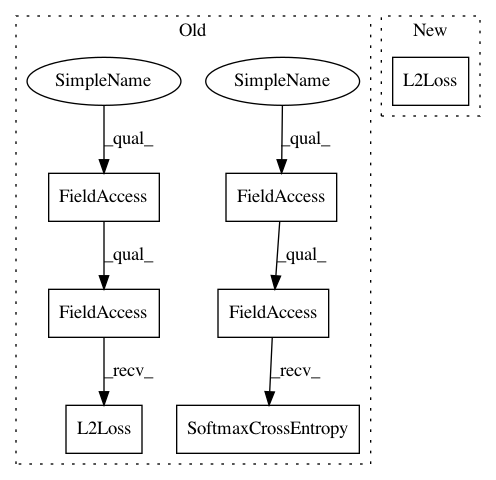

0c241128fc008e89745690bd58e91e754aa40514,deepchem/models/tensorgraph/models/graph_models.py,WeaveModel,__init__,#WeaveModel#Any#Any#Any#Any#Any#Any#Any#Any#,42
Before Change
output = tf.keras.layers.Softmax()(logits)
outputs = [output, logits]
output_types = ["prediction", "loss"]
loss = dc.models.losses.SoftmaxCrossEntropy()
else:
output = tf.keras.layers.Dense(n_tasks)(weave_gather)
outputs = [output]
output_types = ["prediction"]
loss = dc.models.losses.L2Loss()
model = tf.keras.Model(
inputs=[
self.atom_features, self.pair_features, self.pair_split,
self.atom_split, self.atom_to_pair
After Change
output = Dense(n_tasks)(weave_gather)
outputs = [output]
output_types = ["prediction"]
loss = L2Loss()
model = tf.keras.Model(
inputs=[
self.atom_features, self.pair_features, self.pair_split,
self.atom_split, self.atom_to_pair
In pattern: SUPERPATTERN
Frequency: 3
Non-data size: 7
Instances
Project Name: deepchem/deepchem
Commit Name: 0c241128fc008e89745690bd58e91e754aa40514
Time: 2019-05-10
Author: peastman@stanford.edu
File Name: deepchem/models/tensorgraph/models/graph_models.py
Class Name: WeaveModel
Method Name: __init__
Project Name: deepchem/deepchem
Commit Name: 0c241128fc008e89745690bd58e91e754aa40514
Time: 2019-05-10
Author: peastman@stanford.edu
File Name: deepchem/models/tensorgraph/models/graph_models.py
Class Name: DAGModel
Method Name: __init__
Project Name: deepchem/deepchem
Commit Name: 0c241128fc008e89745690bd58e91e754aa40514
Time: 2019-05-10
Author: peastman@stanford.edu
File Name: deepchem/models/tensorgraph/models/graph_models.py
Class Name: GraphConvModel
Method Name: __init__